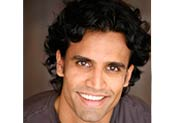

The New York Conservatory for Dramatic Arts is proud to have thousands of its graduates working in the film and television industry. You’ll find them in leading roles such as Matthew Fox, star of the hit ABC series Lost and Lauren Graham star of “Gilmore Girls” or in supporting roles in films such as Dreamgirls and American Gangster.
NYCDA graduates can also be found in prime time television shows on every network including CSI, Friday Night Lights, The Wire, Prison Break, Without a Trace, Las Vegas, Law & Order, Medium, The Riches, Cold Case. Many have leading and supporting roles on virtually every major daytime soap opera. You’ll also find our graduates in national commercials for some of the country’s biggest advertisers, performing in on- and off-broadway, or sharpening their craft at some of the most prominent regional theaters in the country.
NYCDA alumni, we want to hear from you! Please tell us what you have been up and send us an email to have your most recent work posted here!
|
||
|
|
Shelley Hennig
New Orleans native Shelley Hennig is widely famous for her status as Miss Teen USA 2004. While her dazzling allure got her the crown, her passion for acting and incredible talent got her the ticket to the New York Conservatory for Dramatic Arts...
|
|||
|
Matthew Fox
Fox played the role of the dedicated yet troubled surgeon, Dr. Jack Shephard, on Lost. Fox was nominated for a Golden Globe, won the 2005 Satellite Award, and shared the 2006 Screen Actors Guild Award for “Outstanding Performance by an Ensemble in a Drama Series”, for his role in Lost...
|
|||
|
Josh Sussman
Josh Sussman’s career took off after his 2004 graduation from The New York Conservatory for Dramatic Arts...
|
|||
|
Scott Holroyd
In July 2001, Scott was cast in the role of Paul Ryan in the CBS daytime soap opera As the World Turns. After two years, he left the show to pursue other opportunities and moved to Los Angeles a year later...
|
|||
|
David Del Rio
After starring in Nickelodeon’s comedy series, The Troop, 2009 graduate David Del Rio hasn’t forgotten his roots at the New York Conservatory for Dramatic Arts. He recently took time to dash off an update to us...
|
|||
|
Ser'Darius Blain
Ever since graduating NYCDA in 2009, Ser’Darius has put his talent to work. Within the span of 2 years, he has been featured in numerous print ads for Chevrolet & Verizon, booked commercials for Kodak and TIAA-CREF. He is starring in the 2011 remake of Footloose as Woody.
|
|||
|
Gabriel Womack
Starred in feature film- Copperhead with Stephen Brand from Scorpio King (airing on TV 4-5 times a month). Future films that will be coming to theatre are Hotel California and White Wall.
|
|||
|
Mike Havok
Tucson native, Mike Havok, came to New York City to attend the New York Conservatory for Dramatic Arts to pursue his dreams of becoming an actor. While he was still studying here at NYCDA, Mike held internships at Stark Naked Productions and Joan Lynn Casting...
|
|||
|
Liz Nichols
Liz Nichols graduated from the NYCDA 2-Year Program in 2006. After graduation, she chose to go a different direction from acting, into broadcast news....
|
|||
|
Anthony Reimer
Anthony just opened up West Florida’s only professional theatre, the Pensacola Shakespeare Theatre, starring in Much Ado About Nothing and The Complete Works of Williams Shakespeare (Abridged). He also filmed a commercial for the Long Island Power Authority, Refrigerator Recycling Program. He is currently rehearsing for Capital Reparatory Theatre’s production of Abe Burrows’ comedy, Cactus Flower which is slated for performance from October 14th-November 14th and will be directing the world premiere of Brian Watkins’ The Prairie Plays for Wide Eyed Productions this Fall at the Under St. Mark’s Theatre.
|
|||
|
Bonnie Swencionis
2008 graduate Bonnie Swencionis guest-starred on the season 2 premiere of "White Collar" on USA and starred in the teen.com series "Haute & Bothered."
|
|||
|
Daryl Williams
Currently playing the role of David Brooks in HBO’s Treme from the creator of The Wire. He also made several guest appearances in Law & Order and Law & Order: Special Victims Unit.
|
|||
|
Titus Makin Jr.
Titus is currently a recurring character (David) on Fox's hit show "Glee." He has acted on Nickelodeon's "Victorious" and "Gigantic", John Salley's, Biography Channel "Celebrity Ghost Stories", and many short/ independent films. He also recently starred in an episode of the "The Closer" on TNT.
|
|||
|
Emma Bell
Emma was considered one of the 55 faces of the future by Nylon Magazine's Young Hollywood Issue. She recently booked 4 episodes of the upcoming drama series The Walking Dead on AMC. She also played the lead female in the independent movie Frozen and made appearances in TNT’s Supernatural, Fox’s Dollhouse & CBS’ Ghost Whisperer.
|
|||
|
Eric Kolelas
Eric must be our hardest working Summer Acting Training Program graduate. He has been featured in numerous commercials that include works for “Guitar Hero – World Tour”, KFC, Unison and a TV indent for BBC’s Grand National. Earlier this year, he starred in the short film Mosa that received international acclaims and was selected in major film festivals. He recently got cast for the role of “Duncan” in the indie film Sparrow which is set to open in October. Check out his reel.
|
|||
|
Clifford Rivera
Cliff plays opposite Larry David in an upcoming episode of Curb your Enthusiasm on the newest season on HBO. He is currently playing the role of 'Vasquez' for the Cape May Playhouse production of The Dictator. Clifford made numerous appearances on As the World Turns, Nurse Jackie, Rescue Me, Mercy, Ugly Betty, Lipstick Jungle and All My Children.
|
|||
|
John-Paul Lavoisier
Plays the role of “Rex Balsom” in One Life To Live (536 episodes) and made appearances in Gossip Girl, Sex And the City & All My Children.
|
|||
|
Jesse Malinowski
Jesse is currently shooting the new American Pie movie, American Reunion, starring Jason Biggs, Seann William Scott, Alyson Hannigan, Mena Suvari and Tara Reid. He also starred in a national Muscle Milk commercial and in the movie Scare Zone that will be available on DVD in July.
|
|||
|
Brenton Duplessie
Brenton plays the leading role of Scott in the feature film Privacy which will be released in the Fall 2011. He will also perform as Chris in the brand new Broadway play US from the producers of Avenue Q and In the Heights that is slated for 2012.
|
|||
|
Chris Werkmeister
Chris was cast as the lead in the new Denny’s All-Nighter Commercial. He appeared as the lead rock star alongside friend Richard Jordan. See commercial
|
|||
|
Ryan Brannan
Ryan booked a guest starring lead role on "Law & Order" and performed in Woody Allen's "Central Park West". Ryan also can be seen playing Albert” on Guiding Light, "Otto" on All My Children.
|
|||
|
Emmanuel Akintunde
Currently in "Silver Shores" at the Tristan Bates Theatre in London. Played the role of Inok in "Another Biafra" at the Cockpit Theater in London. Featured in McDonald's Flurry commercial for the 2nd year in UK.
|
|||
|
Julio Neira
Julio was featured in two big commercials for Hellman's Mayonnaise and Olive Garden. He is also appearing in the mini series We Are New York. Guest star roles on "Law & Order S.V.U.", "Jane Pauly Show", Co-Star on "Curb Your Enthusiasm", "Johnny Zero"
|
|||
|
Derek Stusynski
2010 graduate Derek Stusynski's film roles include Path to Prologue (Best Dramatic Short and Best Director, American International Film Festival), I Am Julia, The Casting Room, Secret Life, Heavy Stone, Too Hot for Some, Henry, Tango, I Can’t, Everything That Dies, Russian Roulette, Open Assignment, Autumn Meanderings and Just Wanna Be Friends. He can now be seen asJosh in The RAs a web tv series that premiered on September 8th, 2011.
|
|||
|
Tania Pilar
Tania is thrilled to have booked a recurring role on the ABC Family Series 10 THINGS I HATE ABOUT YOU as Sophia Lamersick.
|
|||
|
John DiSciasco
John performed in the original Philadelphia cast of Chuckleball and landed another role in an off-Broadway show, called "So what...I'm still Standing" by Author Yvonne Bridges.
|
|||

|
Amit Patel
Amit starred in Survivors (director Soham Mehta) which appeared last year at The Austin Film Festival. Recently featured in a Nike ad campaign and Tremens.
|
|||
|
Elena Eustache
Landed a role in The Informant with Matt Damon. She is working on her first feature film Erzebeth that she wrote. Elena will also be playing the lead in an upcoming feature New York Kitties.
|
|||
|
Kevin O'Heron
Kevin shot a commercial for Crowne Plaza Hotel. He also landed a major supporting role in an independent feature Cold Blue Eternal which was released in July 2010.
|
|||
|
Katy Kraus
Katy has become a series regular on the pilot "You're So Dead" for MTV alondside appearing in Multiple national commercials, including Time Warner Cable, Arby's, Cheetos, Honda. She was also featured in Byron Phillips: Found.
|
|||
|
Patrick Stoffer
Recently appeared in the off-broadway production of the Columbine Project as the character of Jake Webb and understudied the lead role of Eric Harris.
|
|||
|
Steven Tylor O'Connor
Steven has been seen in the Off-Off Broadway Productions of Bad Fish and Noise. He also recently finished producing and directing a play he wrote entitled Lifelong Lie.
|
|||
|
George Carpenter
George has been in the Off-Off Broadway play Happy Hour and his first SAG short film titled Metal Gear playing Jonathan Slater.
|
|||
|
Amanda Elizabeth Sawyer
Amanda was cast as the lead in the SAG Independent Imprisoned, and featured in the comedic short Speedy Pantaloons by award winning director Susan Burns. Amanda is also a writer and her work was recently produced and performed in The Complete Mixed Bag Show at The Richmond Shepard Theater.
|
|||
|
Emily Rupp
She has just finished an Off Off Broadway production where she wrote 5 original pieces and we will be performing at the United Nations for "NYC Kids Speak Up for Children's Rights" in November 2009.
|
|||
|
Vanessa Hardy
Vanessa was in an indie feature called Something Like Reality and featured in a web commercial for SunTrust Banks.
|
|||
|
Gabrielle Nevins
Gabrielle was featured in the first episode of Coming to Hollywood that aired earlier this year.
|
|||
|
Jennifer Olivera
Jennifer had her first art film called Isle of The Dead that was screened on Governors Island last year. She is also featured in Step up 3D which just got released.
|
|||
|
Patti-Anne Ali
Patti-Anne co-directed a production of The Tempest for Ringplay Productions and filmed Stay Alive(Tribes) which aired on MTV.
|
|||
|
Quentin McCuiston
Quentin filmed Under Jakob's Ladder, an independent project. He also has a comedic web-series at learningwithlawrence.com
|
|||
|
Jayne Elaine Buelle
Jayne worked on the The Ex-List, Fashion House, and several MOWs. She also worked on the pilot for the new FX series Terries.
|
|||
|
Natalie Schneider
Natalie recently shot Differences Between Men And Women, a short film that has been promoted at the major film festivals this year and was also a featured customer on a "Subway" commercial.
|
|||
|
Grant McGowen
Grant is currently in a show that has been chosen to feature at The One Act Play Strawberry Festival.
|
|||
|
Ralph John Lucci
R.J. booked his stage debut in Too Much, Too Far, Too Soon which won The Midtown International Theatre Festival "Shorts Extension", has shot 2 short films, and is in the interactive web series Lombardi Street playing C.J. Lombardi.
|
|||
|
Joey Loomis
Joey recently starred as in the feature Hello My name is Linda. He has previously been featured in 30 Rock and has appeared in a commercial for Optimum Online's "Triple Play"
|
|||
|
Gregory Plunkett
Gregory shot a scene in the new Julia Roberts movie Eat Pray Love. He has been working on his first album with his band, The IntraWaves, as the Lead Singer and Lyricist and just finished touring with French band, Uniform Motion.
|
|||
|
Stephen Hershey
Stephen performs internationally as a life-size "Baby T-Rex" with the Advance Promo Unit of Global Creature's "Walking With Dinosaurs". He will also be working as an atristic director in a production of Rent alongside BTE and ColumbiaUuniversity.
|
|||
|
Emilee Foster
Emiliee starred in a short film entitled Break Down in conjunction with the Ignition Project (www.theignitionproject.com) .
|
|||
|
Anne-Sophie Martin-Mondiere
Anne-Sophie shot her short film Where There is no Light. She also booked a bilingual industrial for Gucci/SAI. She was also part of the Ensemble cast for Jean Genet's five hour play The Screens at Salem Art Works and shot her first feature film, David Winkfield's Anatomy of the Lonely.
|
|||
|
Jennifer Spicer
Jennifer filmed the feature Asabiyyah where she plays the lead character Mary.
|
|||
|
Melissa Malone
Melissa was the voice of Duola in the animated series Shanmao & Jimi Adventures which won Best Animation in Spring of 2009 @ NYIIFVF and also as Lucy for Ride5 Media’s Superhero animation shorts
|
|||
|
Don Money
Some of Don's feature film credits include starring roles in the indies Dog and Butterfly and Dress Rehearsal, The Minority with Billoah Greene and he appeared as Hank in I Am Legend with Will Smith. Don's commercials include AT&T wireless, The 2012 Olympics and a print campaign for True Blood.
|
|||
|
Ray Martell Moore
Played the lead role Faybien Allen in Finding Me and the sequel Finding Me: Truth which is set to release August 2010. www.findingmetruth.wordpress.com
|
|||
And Hundreds of Other Success Stories...
Annemijn Nieuwkoop directed her first feature film "Where There Is No Light" and also starred as lead role in "Love on Ice" Chris Van Kirk - Lead role in independent film "Paint It The Color Envy". Commercial for Kitano Hotel. Manish Dayal - Starring in the Off-Broadway "Rafta, Rafta..." winner of the Lawrence Olivier Award for best Comedy. Tessa Ghylin - Class of 2000 Two Year Program Graduate. Series regular on NBC's "Ed" and supporting in Bob Giraldi’s film "Diner Rush". Guest star on NBC's "Law and Order" Teddy Sears - Guest star in "CSI:Miami,” “Ugly Betty” and “Las Vegas.” Onahoua Rodriguez - Guest spots on “ER,” “Judging Amy,” “Cold Case,” “NYPD Blue,” “The Sheild” and “Weeds.” Films include “A Poor Kid’s Guide to Success” and “Pandemic.” Tania Pilar Ragland - Booked her first audition for iCarly on Nickolodeon Michael Kevin Walker - "As The World Turns". Appearing in the film “4Chosen.” Yellow Book national commercial; two short films - "The Attick" and "Eddie"; industrial film for NASD. Bethany 'Vanoy' Burnough - Starred in "Movin' In" with Estelle Harris.
Tony Bussio - Booked national commercial for Fitness Depot running in October 08 on Canadian Television. Stephen Hershey - Plays "Pete" in "Treading Water". Assistant Director of the Harmony Theater Company. Stu James - Featured in the critcally acclaimed film "Dreamgirls". In the upcoming film “Burning Sands.” Benny in “Rent” on Broadway. Amy Tedesco - Guest spot on NBC's "Law & Order" Angelique Cabral - Nationals for Toyota, Chase, national voiceovers for sobe and diet 7UP, and dayplayers on AMC, OLTL, and GL. Jeremy Batiste - In the films "The Perfect Sleep" and "Shadowboxing 2". Also starring in the series "Noah's Arc" and in the films "Paranuae" and "Guerilla". Ryan Hill - Starring in "The Horse, The Bird, The Monkey & The Dancer" at Red Eye Theater in Minneapolis. Lillian Pennypacker - Class of 2008. Booked a national commercial for McDonald's
Samantha Leah Marulli - National commercial for Nike.
Donovan Sanders - Booked a national tour with Theatreworks USA performing the children's musical "Max and Ruby".
Tenisha Torres - Guest star in Law and Order SVU. Commercials for Dunkin Donuts and Ace Hardware.
Don Money - 2004 Graduate - Playing the character of Rob Emerson on CBS' "As The World Turns". You can also see him starring in the new series on fangoria.tv "War of The Dead: Z.E.R.O." Also appearing in the upcoming films “The Adventures of Walter Bloom and Gallery of Fear.” Lead in the indie film “Obsidian Mirrors.”
Ashley-Brooke Silver - Appearing in the film “Absolute Trust.” Booked four days on "One Life to Live"
Landon LaVigne - Lead in a film about the Citadel Military School called "El Cid". He also featured in the film "On the Job Training".
Marisa Vitali - In You & I written and directed by Christopher J. Scott and an official selection of the Cannes Film Festival 2006.
Tonia-Marie Gallo - Class of 2006 - Commercial for Chevy in the 2007 Superbowl
Vicki Jeudy (Class of 2007) and Vance Bradford (Class of 2005) - In the critically-acclaimed Off-Broadway show "Platanos and Collard Greens". In the film “Bottom Feeder.”
Anthony Bossio (Class of 2000) - Played Joe Fantelli on CTV mini-series "Would Be Kings"; National Commercials in USA & Canada for Casio Cameras & McCain’s Self-Rising Pizza and for Tim Hortons; spot with Donnie Whalberg in a show called "Runaway". “Instant Star” now in it's second season on CTV. Bollywood feature film called "Look-Alike;" radio play for CBC Radio called Katy & Salvy; a play called "Home of the Brave" at Teatron Theatre.
Tony Sandrew - Tony in "Tony & Tina's Wedding" in Las Vegas
Teddy Sears - Guest star in "CSI:Miami"
James Hunter - "American Gangster" principle role
Toney Chem - "One Life to Live"; independent film "At My Hope"
Hilary Greer - "All My Children". Films include “Death on Demand” and “The Fantastic Two.” Commercial for Capital District Physician's Health Plan, also recurring on All My Children, and Accident Investigator Under-5 for Discovery Channel, and featured in Rob Thomas Video-This is How a Heart Breaks.
Phillip Brock - Off-Broadway "Boys Just Wanna Have Fun"
Lyndi Arns - Booked a lead in an independent film "Their Choice"; Byron LaRosa directs, Rome Productions produces
Alvaro Sena - In Cherish at Nicu's Spoon Theatre
Craig DiFrancia - “Chappelle’s Show” on Comedy Central, “The Guiding Light,” “One Life to Live” and “Third Watch.” Films include “The Passionist,” “Night Falls Fast,” “They’re Just My Friends” and “Last Night.”
Jackie Senatore - Films: “Corbis,” “Get Rich or Die Tryin,” “Sarah’s Metaphor,” “Best Regards, Love Angelina” and “Vernerde Fiore!” TV: “All My Children.”
Iris Almario - “King of Queens,” “Sex in the City,” “Las Vegas,” “The Young and the Restless” and “General Hospital.” Films include “Smoke” and “The Last Request.”
Harrison Butler - Playing the younger half in "Tuesdays with Morrie" at the Processional Summer Theater there in Greeley, Colorado
Mary Pat Dowhy - “Significant Others” on Bravo as well as guest spots on “Las Vegas,” “Scrubs,” “Judging Amy” and “7th Heaven.”
Keith Pillow - Guest star on “Judging Amy,” “The Shield,” “Bones,” “Dexter,” “Nip/Tuck” and “Terminator: The Sarah Connor Chronicles.”
Nancy Eng - TV appearances include “Nights of Prosperity” and “Law and Order: SVU.” Bud Light National commercial.
Marisa Vitali - In You & I written and directed by Christopher J. Scott and an official selection of the Cannes Film Festival 2006
Vivan Dugre - Booked a “CSI: NYC” as well as a three episode role on “CSI: Miami.” She can also be seen in “Conspiracy,” “The Suzy Prophecy” and “Kabluey.”
Alejandra Ambrosi - Just finished shooting "Arriba" in Costa Rica with Joshua Marston, the director of the award-winning "Maria Full of Grace" Halima Henderson and Mark Mallek in "A Family's Play" with the Diversity Players of Harlem. Has also appeared in the films “Eavesdrop” and “Yeah No Definitely.”
Yan Xi - In the films “Proving Ground: From the Adventure of Captain Redlocks” and “She’s Out of My League.” She has also appeared on “The Wire” for HBO.
John Weigand - U/5 on CBS, As the World Turns, Beauty and the Beast, playing Maurice (the father & inventor) at the Broadway Palm Dinner Theatre-West in Arizona
Frantz St. Louis - Joined the Los Angeles theater production of "Devil’s Night" written by Marshall Allman (Prison Break) and Scott Haze. He will appear in the movie version of the play in 2009. Frantz also played the role of "Paperboy" in an episode of "The Shield" (FX) entitled "Rap Payback." HBO original movie ‘Everyday People’ and Fox TV series "Johnny Zero"
Mike Bordwell - In Joan's Voices at The Medicine Show Theate
Megan Sikora - In "Curtains" starring David Hyde Pierce the Ahmonson in LA from July to September, coming to Broadway after that.
Ron Butler - Television appearances include “Dirty Sexy Money,” “How I Met Your Mother,” “Eli Stone,” “Terminator: The Sarah Connor Chronicles,” and “Crossing Jordan.” Films include “True Jackson,” “Rain” and “Smother.” Costar “Summerland”
Brittany Palmer - Will soon be seen in the films “Stricken” and “G.I. Joe: Rise of Cobra.” She has also been on a few episodes of “The Guiding Light.” The role of Kerry on “All My Children” on ABC
Ashley-Brooke Silver - Plays Rachel Marshall in the independent film "Absolute Trust," Harvey Mandlin, Director.
James Rana - LOVES LABOUR'S LOST at The Shakespeare Theatre in D.C. the show will then transfer to the Royal Shakespeare Company Anthony Bagnetto Shortly After Takeoff at Altered Stages. He will be seen in the film “Spring in Her Step” in 2008.
Darbi D. Worley - Will play the role of Jane in “Breadcrumbs” directed by Mike Nichols.commercials for McDonalds, Verizon, Abbott Labs, zappos.com, Papa John’s, Aveda, Dove Skincare; television series, “Breaking Vegas” and “Rescue Me.” Most recently the new series, “House Smarts.” Supporting role “Breaking Vegas” for the History Channel
Chris Bachman - TV debut on Love Monkey (CBS). He also appeared in the movie “Snakes on a Plane.”
Stephanie Darakjian - Guest lead on “Conviction” (NBC). Films: “The Time Machine” and “Figment.”
Robyn Gryphe - "Olive Oyl", lead in two "Popeye" cartoon V/Os -- a radio spot and industrial for King Features, the original producers of "Popeye"
Trey Teufel - Macduff in Macbeth at Utah Shakespeare Festival
Christopher Villa - TV: Ballroom Bootcamp on The Learning Channel; Film “BoysTown” and “The Onion Movie.”
Christian Kauffmann - Jackson Hewitt commercial playing Frankenstein
Brad Snedeker - Starred in the film “The Pink Conspiracy.” Guest Star on “ER” and “Reba.”
Rachel Nau - Needs to catch us up on two years of steady work since completing the conservatory. Commercials: "This vote counts," "Church of Jesus Christ of Latter Day Saints," two spots for TV Land, Comedy Central - "Dave Attell Promo"; Internet: Host for a dating web site Zogo.com; Film: "The Wicked," "Sanctified," "Affair Play," "The Recital," "The Best is Yet to Come"; Theatre: "Untitled as of Yet"
Todd Detwiler - Recurring on All My Children as an orderly, two student films, one for Brooklyn College called "Nevermore" and another for the New School called "Laid"
Brooke Blanchard - As "Jill the Paramedic" on ABC's "Grey's Anatomy
Nadine Heimann - "Vanessa" a series regular on the HERE network's Dante’s Cove
Omar Mora - Independent movie call East Side Story a lead character in a student film
Greg Barkhamer - Traffic.com commercial
Archie McGregor - National spot for Pepperidge Farms Whim cookies
Suzanne Johnson - The Food Network, Barclay's Bank,Dextrol (demo), TV Land/ Wendy's, National Cable Television Industry, Good House Keeping TV, The Show, The Vitamin Shoppe, Cinqular Wireless, Bluefly. Com, Bluefly.com (demo-radio), Ronald McDonald House.
Karen Craig - Now a successful screenwriter "Forbidden Secrets" for Lifetime
Denis J. Lanza - In a new play by Eugenia Macer-Story called "Just 45 Minutes to Paradise;” also doing a one man show entitled "The Knife Assassin" in conjunction with the La Muse Venale Acting Troupe at Where Eagles Dare Theatre and “O'Connor the Dog” in the 13th Street Repertory Co.'s children's play "Wiseacre farm." Films include “Fetish Mode.”
Kevin Shea - In two indie films “Chaos Unlimited” and “The Outcast.” Upcoming feature films include “Banshee!!!” and “Sasquatch Assault.”
Lewis Gelb - Robitussin national, MTV-bound music video, also "The Sopranos" and "Chappelle's Show."
Elise Rovinsky - Two independent films - Sheriff Nickie Welles in “Person of Interest” and one of the leads, Mary-Ellen, in “Bear Women” Will Manning in “Trash” at Access Theater for FringeNYC.
Gillian Delgado - 48-hour film competition, "Without a Clue" playing Miss Scarlet as well as “My Imaginary Friend Lars Stevens.”
Paula Vogel’s - Script “And Baby Makes Seven” was staged at Temporary Theatre Company
Angel Cabral - Booked Toyota national spot with Chad Pennington and Eli Manning; also did two SOBE voiceover national spots, is recurring as an Under-5 on All My Children, and also shot a National JP Morgan Chase commercial
J. Teddy Garces - Has been seen on “One Life to Live,” and “Cold Case.” He was featured in the 2008 films “Feed” and “Mano.” Law and Order (Criminal Intent) on NBC, Sylvania Light Bulbs national commercial, industrial film "Defense Contractor," independent short films "No One Will Ever Know" and "Ignacio."
Jennifer Johnson - Featured in the May issue of Fashion O (the Oprah Magazine)
Travis Woods - As a redneck soldier in the feature film “Spaghetti Park”
Patricia Cajuste - Promo for MTV video/music awards Robitussin national, MTV-bound music video, also "The Sopranos" and "Chappelle's Show"
Jesse Bernstein - “Law and Order,” “Days of Our Lives” and “Veronica Mars.”
Paul Gosselin - “One Life to Live,” “The Big Bad Swim” and “Frozen Impact.”
Jerry Broome - “One Life to Live” and the feature film “Death on Demand.”
Marisol Lopehandia - One Life to Live and As the World Turns
Alex Feldman - Class of 1999, guest starred on “CSI: Miami,” “Cold Case” and “Law and Order: SVU.” He can also be seen in the films “The Midnight Man,” “Kush,” “Trespassers” and “Suits on the Loose.” Film directed by James Toback ‘When Will I Be Loved’ which opened at the Cannes Film Festival, four independent films: ‘Come Away With Me,’ ‘Trespassers,’ ‘Bible Boyz,’ and ‘The Final Patient,’ National spot for Ford Trucks. Voiceovers for national commercials for Chrysler, Motorola, & Starburst Candy
Griffin Matthews - Guest star on “Numb3rs” (CBS) and “Cashmere Mafia.” Commercials for Virgin Mobile and Dr. Scholl's, promo for Nickelodeon
Stephen Ott - In the Indie feature "Homecoming."
Luis Pedron - Films include “Writer’s Block,” “American Adobo,” “The Devil and Daniel Webster” and “The Theif.” He also directed and appeared in the short film “Party Games.”
Kevin Kilner - Guest star on Crossing Jordan, guest star on “CSI:Miami”
Sylvia Norman - National commercials for XM Radio, Home Depot, Sears, and an MTV Promo for "Punked"
Shellee Nicols - Films include “Petstory,” “Death and Taxis” and “Ellipsis.” and in the indie film “Half In Love.”
Florina Petcu - In three independent features: “Winter Solstice,” “The Pied Piper of Manhattan,” and “The Racket” also part of MacBeth.com multimedia project.
Peter Paulsen - BRAVO special "100 Scariest Movie Moments", independent features "Hell's Half Acre," “Coconut,” and "Dress Rehearsal"
Dawnnie Mercado - Two episodes of Judging Amy, CBS, "Legacy," “Strong Medicine,” “What About Brian”, "Consent." and “Third Watch” on NBC
Damian Ladd - Lead in the indie film “Demon Resurrection.” Other films include “Dress Rehearsal” and “American Black Beauty.”
Jessica Niles - “One Life to Live” and “American Heiress.”
Naomi Kakuk - Films: “The Producers.” Broadway: “The Frogs” and “The Producers.”
Keisha Alfred “Law and Order: SVU,” “Shark,” “House M.D.” and “Criminal Minds.”
Jonathon Dickson - Lead role Breaking Vegas
Brianna Shaughnessy - Supporting role, “Breaking Vegas” for the History Channel
Kevin Shay - Lead role, “Breaking Vegas” for the History Channel
Sonya Rose - “Breaking Vegas” for the History Channel plus a starring role in the movie “The C.O.R.P.S.”
Mary Pat Dowhy - "Significant Others" on BRAVO in the role of Ginny and a film by Rodriguo Garcia called "Nine Lives" starring Glenn Close, Holly Hunter and Sissy Spacek.
Travis Wood - Has appeared on “All My Children,” “The Guiding Light” and “As the World Turns.” His film appearances include “Zombie Strippers!” and “The Slaughter.”
Robyn Gryphe - "I Love NY" spot O/C and lead character V/O, the role of Athena for the video game "King of the Fighters - Maximum Impact"
Langdon Bosarge “Law and Order” and “Ten Lives.”
May Porter - Indie films “Cherry on Top” and “Coochie” plus feature film “Big Fish”
Amy Herring - Reoccurring role on “All My Children.” Films roles: “Origin of Species” and “Nina.”
Carl Palmer - “As the World Turns” on CBS and “The Sopranos” on HBO Lena Georgas – “Kingdom Hospital” on ABC. Films such as “The Pelican Brief” and “We Pedal Uphill.”
Emily Ann Turner - Films include “Cupidity” and “The Winner is…”
Justin Daniel - Guest spots on “Ed” and “Strangers With Candy.” Also appeared in the film “The Good Shepherd.”
Jena Girouard - National network commercial for Pier One and films such as “Slow Jam King” and “It’s Just Coffee.”
Keith Pillow - Guest star on “Judging Amy”
Melanie Crim - Indie films “Shooting Livien,” “Talking in Black and White” and “Central Park Jog.”
Lisa Terezakis - “Midsummer Night’s Dream” at Stratford Shakespeare Festival, commercial for Pilgrim’s Pride and feature film “Duane Incarnate”
Stefanie Bari - Recurring guest starring role on “NYPD Blue”, featured part on “Law and Order: Criminal Intent” and a part in “Tony and Tina’s Wedding” Off Broadway
Meridith Ross - Indie films “Cupidity”, “Momma’s Boy” and “Friends Like These”
Arol Jahns - Indie films “Chessmates” and “The New Resident” also supporting role in “Ed” on NBC
Anthony Bagnetto - “Combat Jump” on the History Channel, feature film “Nothing Really Happens” and indie “Hot Oral Hygiene”
Jennifer Chambers - Ulla in “The Producers” on Broadway
Pete Postiglione - Films including “Our Lady of Victory,” “Winter of Frozen Dreams” and “Senioritis.”
Noelle Monteleone - “Love on the Rocks,” “Baby Blues,” “Simple Things” and “The Year without a Santa Claus.” Guest spot on “Army Wives.”
Christina Grandy - “The Guardian” on CBS, “The West Wing,” “Third Watch” and “The Evidence.” Movies include “Some Kinda Joke” and “Bruce Almighty.”
Jay Russell - “The Play What I Wrote” at the Lyceum Theatre on Broadway. Television roles include “Spin City,” “Law and Order” and “The Sopranos.”
Jennifer Boggs - Lead role in the feature horror film “Jinininki”
Joe Whelski - Lead role in the indie film “Light Under the Rock”, as well as appearances in “Ghost Story” and “Hung-Up.”
Rob Masabny - “Can You Tell” on the Oxygen Network, as well as “Harrison Macauley Is Going to Kill Me.”
Erica Mansfield - National tour of “Mama Mia”
Stephanie Nasteff - National voice-over commercials for Arrid Total Deodorant, Dannon Lite-n-Fit Smoothie, Chapstick Lip-Moisturizer, Little Tikes Toys, and Southern Company
John Weigand - MTV and NY Lottery commercial, “Noise” an indie film, “Spectropia” indie interactive film, “Show Boat” at La Comedia Dinner Theatre Spiro Papas – spot on “The Real Food Show”
Lena Georgas - TV shows include “Nu3bers,” “Kingdom Hospital” and “Law and Order.” She has also worked extensively in Off-Broadway theaters.
Eileen Hannah - Indie film “Shock Act,” student film “Lost & Found” and “Rounding Third.” She has also appeared on “All My Children” and “Another World.”
Ghislaine Rollins - NBC news promo and “The Definition of Insanity.”
Michelle Pawlina - Lead role in the indie film “Yalita”
Keith Camire - Student film “January 28th” and “Beyond Recognition.”
Herve Clermont - Lead role in the feature film “Friendly Fire” w/Gary Busey and Deborah Wilson
Natalie Picow - Feature films “Nosey Parker” and “Exiled.” TV work includes “Law and Order.”
D’vorah Bailey - “Ed” on NBC and “Heights.”
Dawn Derow - Lead singer for Cirque du Soleil
Hilary Prentice - “Wedding Night” & “Dangerous Liaisons” at The Abington Theatre & “Bitch Macbeth” at The Kraine Theatre
Deja Kreutzberg - “Law & Order” on NBC, “Hope & Faith,” “As the World Turns” and “CSI:Miami.” “The Tempest” at The Storm Theatre
Craig DiFrancia - “Chappelle’s Show” on Comedy Central & an indie film “Technology vs. Man”
Tamar Kagan - In the feature films “Black Prince,” “Good Luck in Her Eye” and “Tiny Dancer.”
Bryn Dowling - “The Producers,” “Chicago” and “The Frogs” on Broadway. Film: “The Producers.”
Joe O’Keefe - “Law & Order: Criminal Intent” on NBC
Julia Pennington - Guest star on “JAG” and national commercials for Isuzu and UPS
Michael Ariemma - Off-Broadway productions of “The Manchurian Candidate” & “A Clockwork Orange.” Films include “East Broadway” and “Big Apple.”
Travis Wood - Recurring role on “All My Children”
Rosanna Canonigo - “Play Ball!: A Trilogy of Baseball Films,” and “Truly, Madly, Deeply.” Also “Night of Ether” at the Center Stage Playhouse
Maura Anderson - Maura now works as a Production Manager. She has worked for several major production companies and did the photography on a film directed by Max Winkler starring Uma Thurman, Michael Angarano, and Lee Pace.
|
||||